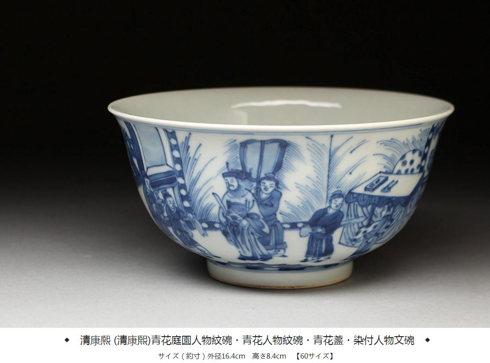
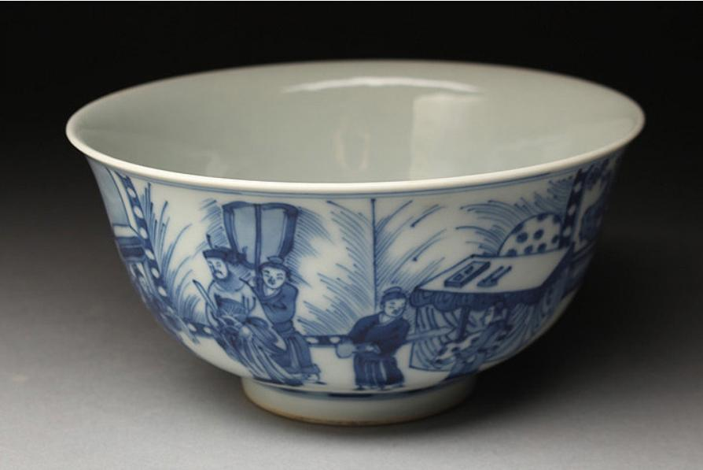
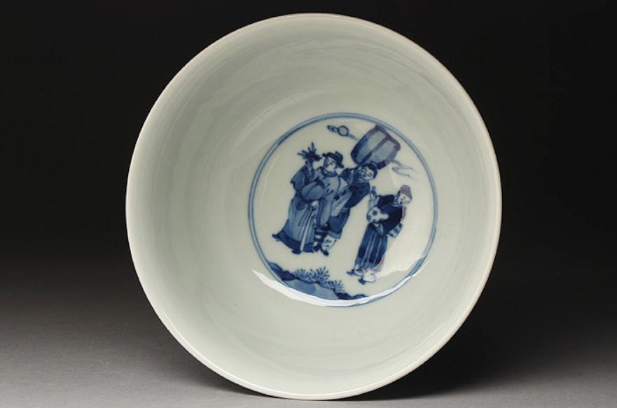
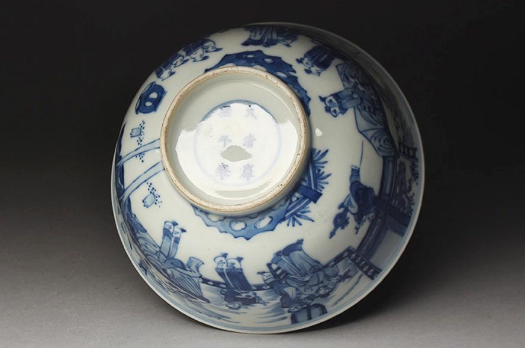
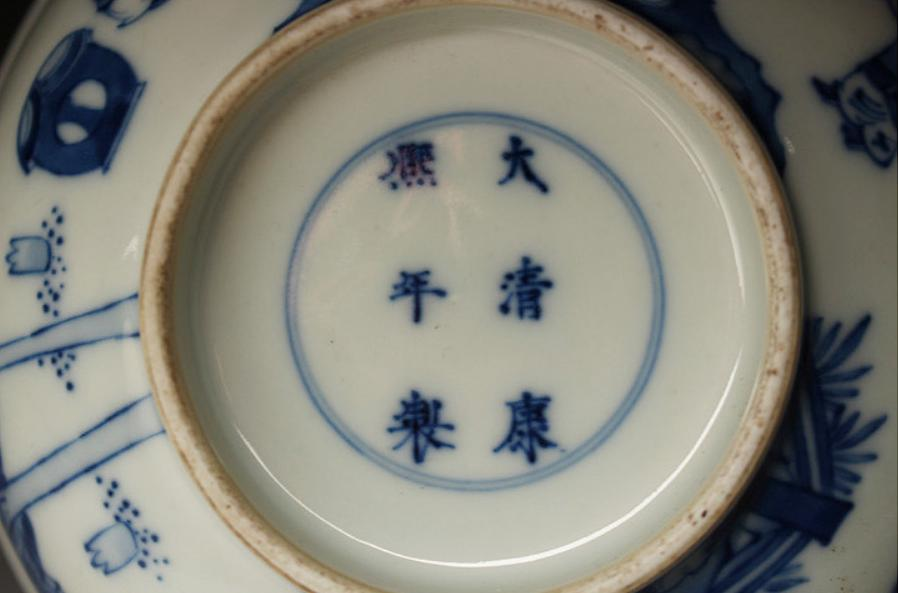

清 康熙官窑青花人物“折桂图”碗
镇馆之宝 · 折桂成名 · 诗意徽记





此碗为清康熙官窑青花人物器，敞口深腹，胎体坚致，釉色莹润，青花发色明快雅致。通体以青花绘“折桂图”人物故事，表现科举及第、金榜题名、折桂成名的美好寓意。人物形神生动，意趣盎然，工笔细腻，气韵流畅。
“折桂”，自古为才子登科、勇攀高峰的象征。此器不仅是瓷艺珍品，更是Mnemoglyph网站“才情折桂，灵魂高洁”的精神徽记。
“折桂”，自古为才子登科、勇攀高峰的象征。此器不仅是瓷艺珍品，更是Mnemoglyph网站“才情折桂，灵魂高洁”的精神徽记。
规格：
口径：16.4 cm | 高：8.4 cm
年代： 清康熙官窑（底款“大清康熙年制”六字青花）
口径：16.4 cm | 高：8.4 cm
年代： 清康熙官窑（底款“大清康熙年制”六字青花）
一碗青花，折桂成名。
千年风雅，留取人间。
诗心如月，桂影如画，
何妨举碗，对影成三。
千年风雅，留取人间。
诗心如月，桂影如画，
何妨举碗，对影成三。